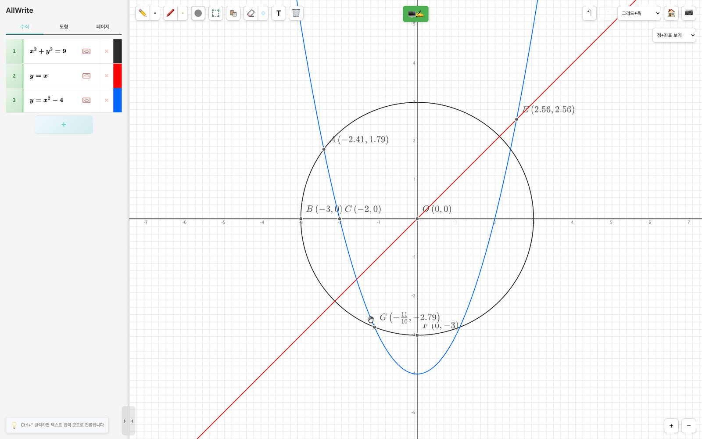
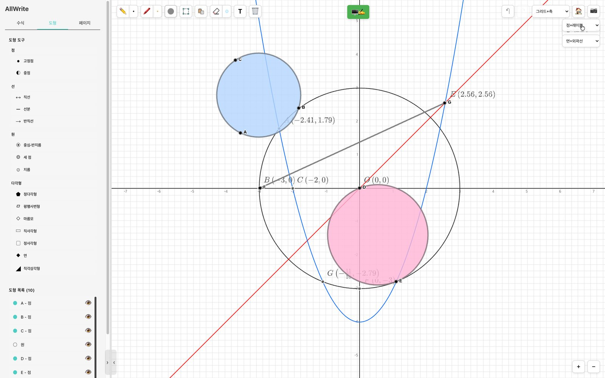
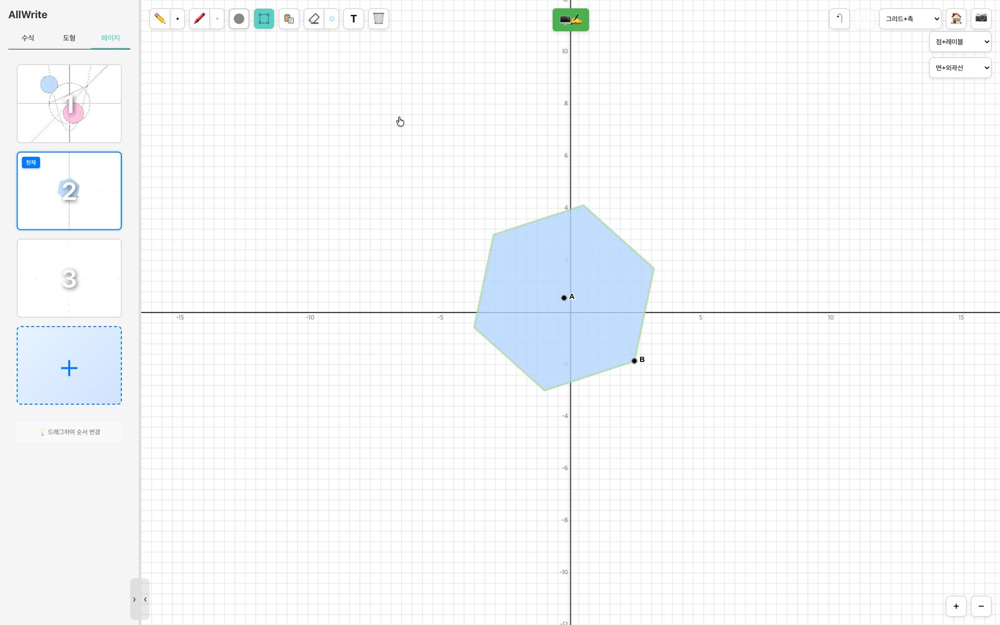
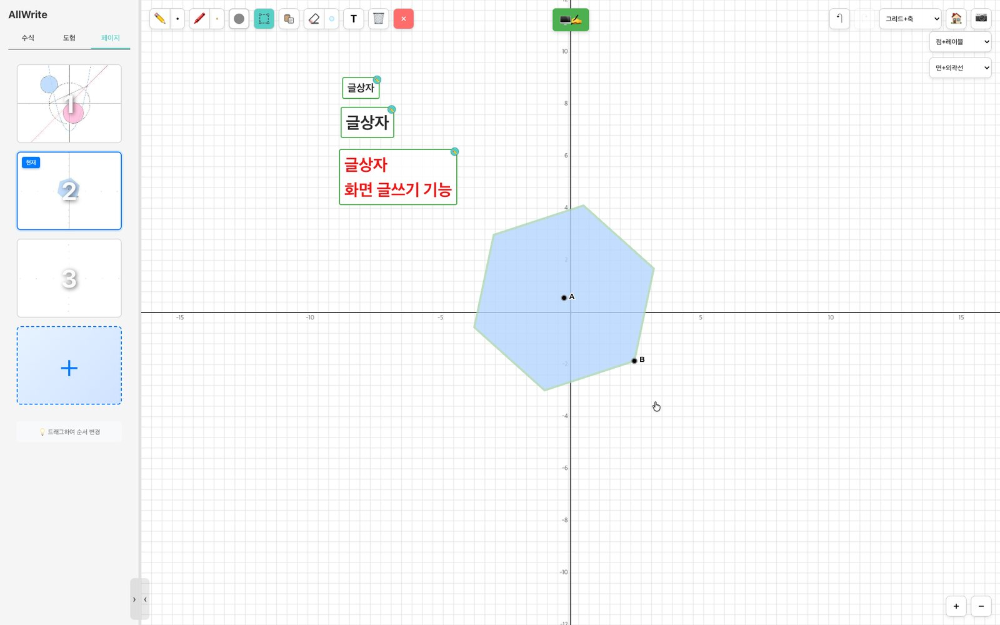

Drag one point and every shape built on it follows
Type an equation to get its graph and intersection points, construct shapes on top, then write over it by hand. No more erasing a diagram to redraw it.
Runs in a web browser. Nothing to install.

Real screen from March 2026. The interface labels are in Korean.
One canvas, four jobs
Hover over or tap an item to see it on screen.
- Equation to graphType an equation and AllWrite plots it, then labels the points where graphs meet.
- Geometry constructionsDraw points, segments, circles, and polygons, and fill them with color. Show or hide each one from the shape list.
- Multiple pagesKeep each problem on its own page and switch between them from the list on the left.
- Text boxesPlace notes in different sizes and colors right on the diagram.



Points and shapes stay connected
AllWrite keeps track of which points each shape was built from. Move a point and everything built on it is recalculated.
Drag an endpoint, the segment follows
Drag the center of a circle and the whole circle moves.
Midpoints update themselves
When either endpoint moves, the midpoint moves to its new position.
Intersections get coordinates
Where two graphs meet, the point is marked with its coordinates.
Tools for the lesson
Pen and highlighter
Pick a width and color and write straight onto the diagram.
Screen capture
Save what you wrote as an image to send to students. The desktop app can also save to PDF.
Undo, zoom in and out
Undo mistakes, and widen or narrow the grid to the range you need.